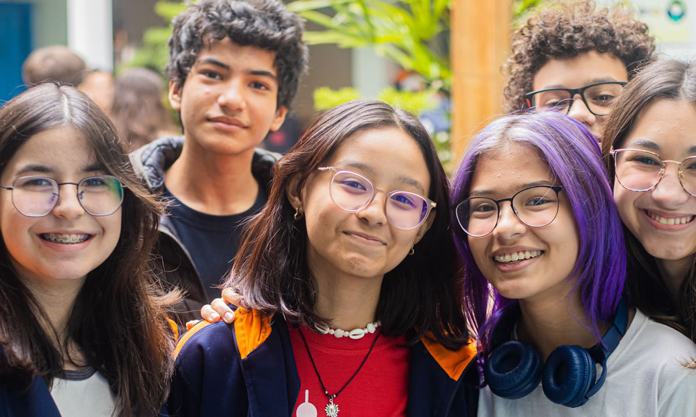
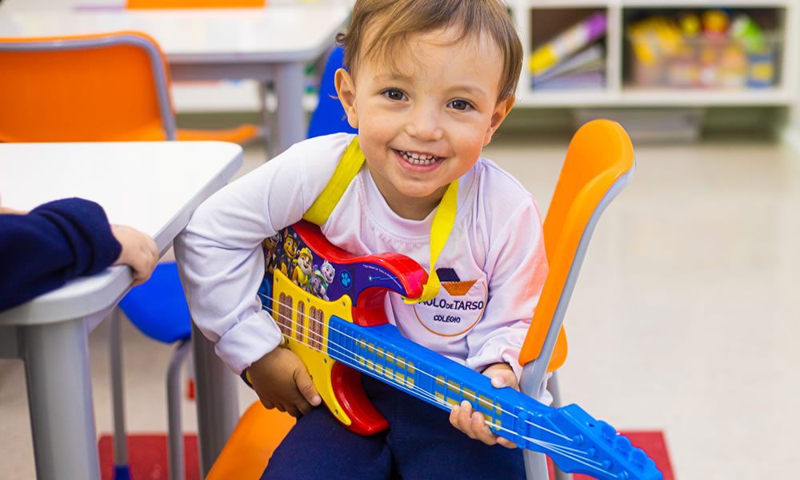
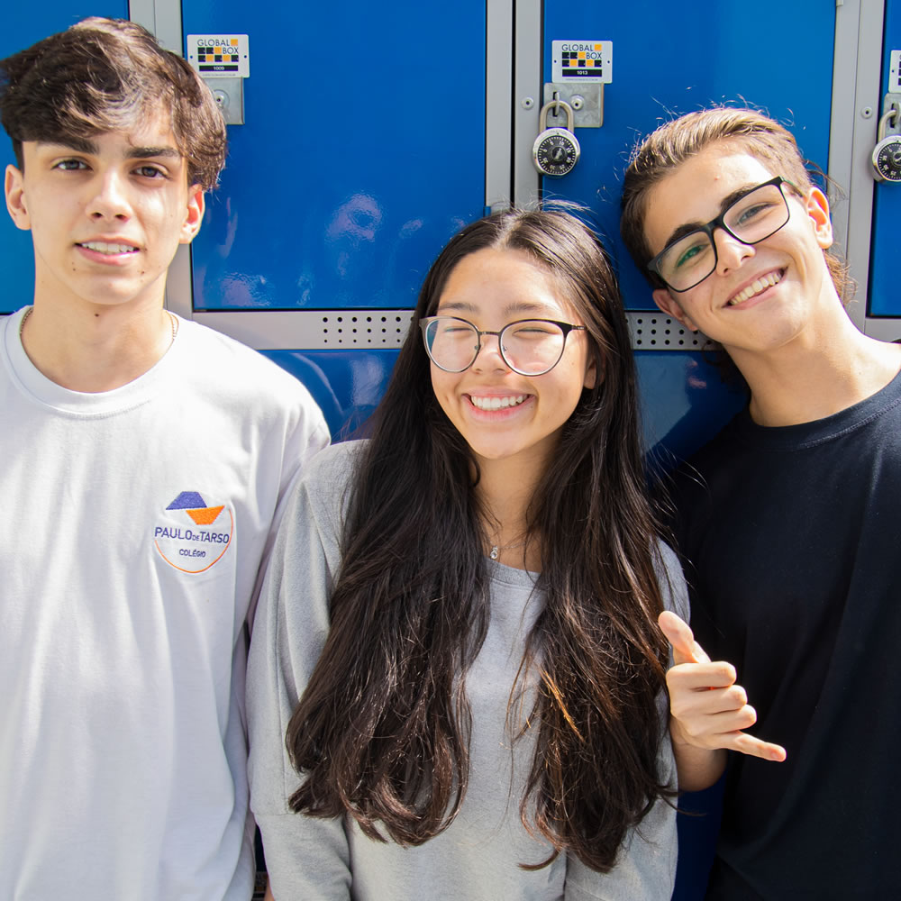
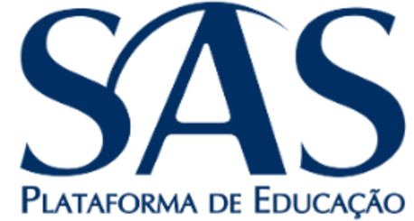
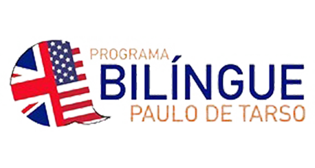
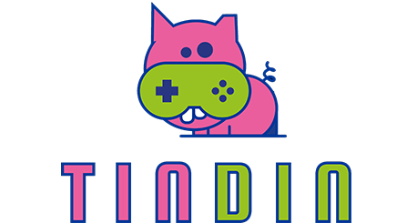

Colégio Paulo de Tarso
Educação para
cada etapa.
Da Educação Infantil ao Ensino Médio, uma formação que conecta conhecimento, autonomia e convivência.
Aclimação · São Paulo



Um lugar para aprender. Um lugar para pertencer.
Conhecimento e acolhimento em cada fase.
No Paulo de Tarso, conhecimento e acolhimento caminham juntos. Nossa proposta une ensino, autonomia e desenvolvimento socioemocional, com um olhar atento para cada aluno.
Aprender, conviver e se desenvolver
Aprender, criar e conviver.
Experiências que desenvolvem habilidades dentro e fora da sala de aula.
Uma jornada cheia de possibilidades
Uma trajetória de aprendizagem.
Da curiosidade dos primeiros anos à construção de novos caminhos. Estamos juntos em cada etapa.
Um mundo de aprendizados
Aprendizado que amplia repertórios.
Experiências que fazem parte da rotina e ajudam a formar pessoas para a vida.
Novas possibilidades.
Programa bilíngue+
O inglês faz parte do dia a dia desde a Educação Infantil. Vivências lúdicas conectam fala, escuta, leitura e escrita à descoberta de outras culturas.
Explore o programa ↗Desenvolvimento socioemocional+
Com o programa O Líder em Mim, os alunos desenvolvem autonomia, liderança e respeito nas relações. Aprendizados que acompanham as escolhas dentro e fora da escola.
Conheça a proposta ↗Tecnologia e robótica+
Robótica, games e ferramentas digitais transformam a curiosidade em projetos. Uma forma de desenvolver o raciocínio, a criatividade e a colaboração.
Veja como acontece ↗Educação financeira+
Por meio da plataforma gamificada TinDin, os conceitos de educação financeira ganham aplicação prática, incentivando planejamento e responsabilidade.
Saiba mais ↗Laços que fazem a diferença
O colégio na voz das famílias.
A parceria com as famílias faz parte da nossa forma de educar. Conheça experiências compartilhadas por quem acompanha essa jornada.
Pequenos momentos. Grandes memórias.
A vida no colégio.
Espaços de encontro, experiências e novas habilidades. Um pouco do que se vive por aqui.
Venha conhecer pessoalmente ↗CONEXÕES QUE ENRIQUECEM O APRENDIZADO



Matrículas e contato
Conheça o Paulo de Tarso de perto.
Conheça os espaços, converse com nossa equipe e descubra as possibilidades para o seu filho.
Escolher um horário de visita ↗São Paulo – SPVeja como chegar ↗